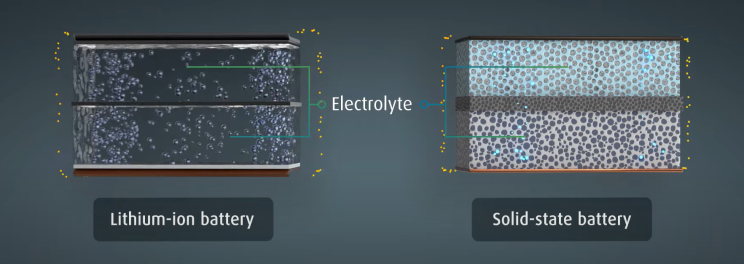

Liquid lithium batteries have dominated the market, but they face limitations in safety and energy density. Solid-state batteries emerge as a promising solution.
Liquid Lithium Batteries: Powerhouse with Issues
Invented in the 1970s, lithium-ion batteries are popular for their high energy density, fast charging, and long life. However, safety concerns linger due to:
- Flammable Electrolyte: The liquid electrolyte can leak and combust at high temperatures.
- Lithium Dendrite Growth: Lithium deposits can form, potentially piercing the separator and causing short circuits.
Solid-State Batteries: A Safer, Denser Future
Solid-state batteries address these issues by replacing the liquid electrolyte with a solid one. This offers:
- Enhanced Safety: Solid electrolytes are non-flammable and prevent dendrite growth, significantly reducing fire risks.
- Higher Energy Density: Solid-state batteries can use lithium metal anodes, leading to potentially double the energy storage compared to liquid batteries.
However, challenges remain:
- Slower Charging: Solid electrolytes have lower conductivity, hindering fast charging capabilities.
- Manufacturing Costs: High material and production costs are roadblocks for mass production.
Semi-Solid Batteries: Bridging the Gap
Semi-solid batteries combine solid and liquid electrolytes. They offer some advantages:
- Faster Charging: Compared to fully solid-state batteries, they maintain a degree of liquid electrolyte for faster charging.
- Easier Production: Manufacturing processes are more similar to existing liquid battery production.

The Path Forward: A Gradual Shift
Fully solid-state batteries require further development for mass production. Semi-solid batteries might bridge the gap as they:
- Utilize familiar materials and manufacturing techniques, making them easier to produce.
- Offer improvements in safety and potentially higher energy density compared to liquid batteries.
The future of battery technology is expected to follow a path of:
- Liquid Lithium-ion Batteries
- Semi-Solid-State Batteries (Transitional Phase)
- All-Solid-State Batteries
Solid-state battery development focuses on three stages:
- Replacing liquid electrolytes and diaphragms with solid ones.
- Utilizing lithium metal anodes for increased energy density.
- Implementing even higher energy density positive electrode materials.
Solid-state batteries hold immense potential for safer and longer-lasting devices with extended range, thanks to their superior energy storage capacity. With continued advancements, they're poised to revolutionize various industries relying on batteries.